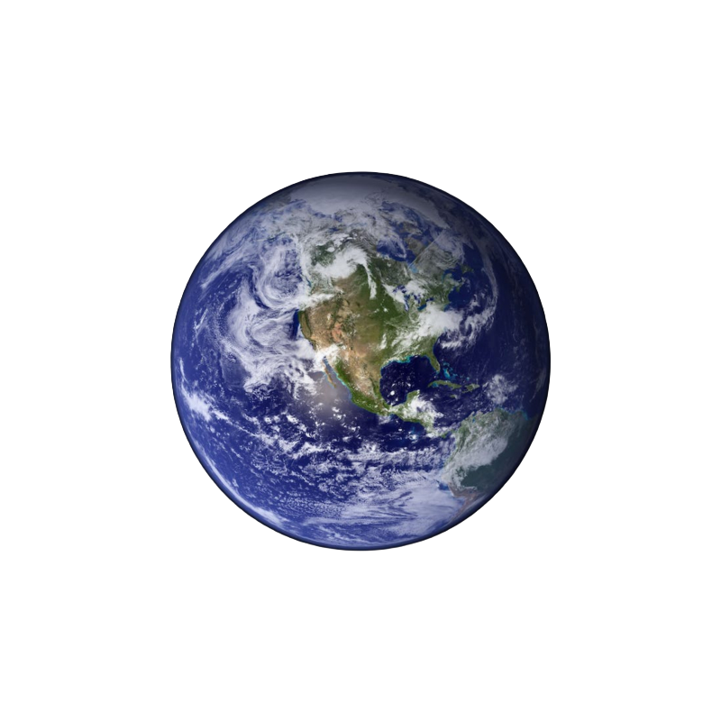
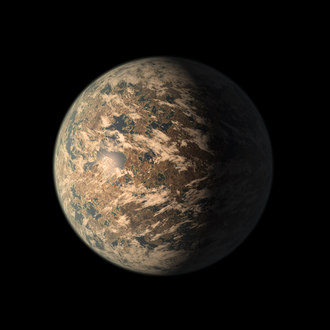
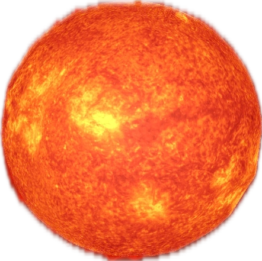
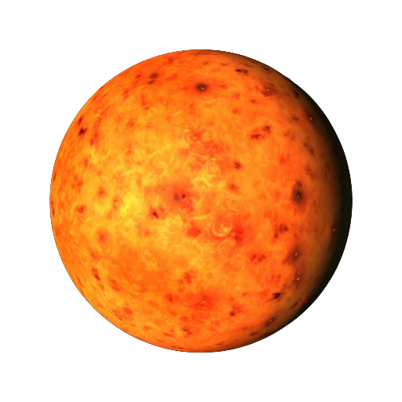
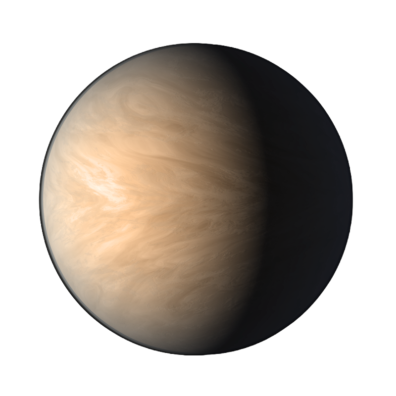
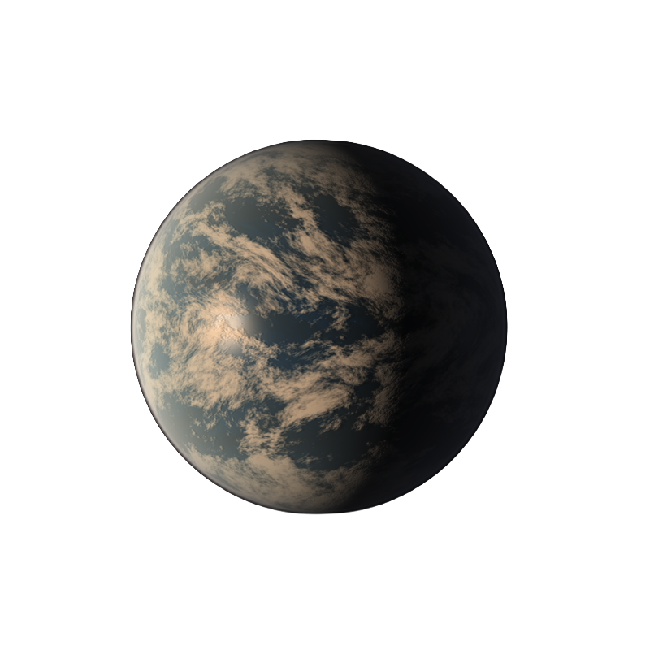
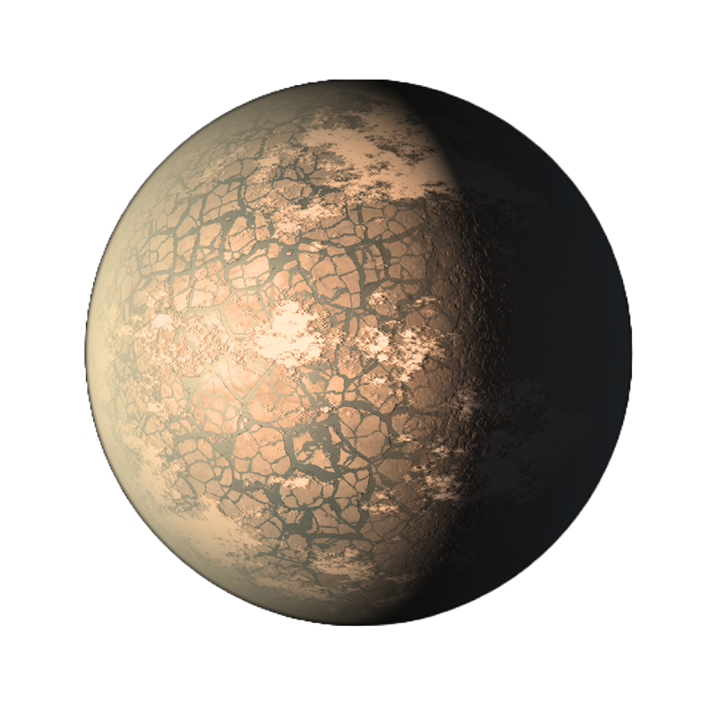
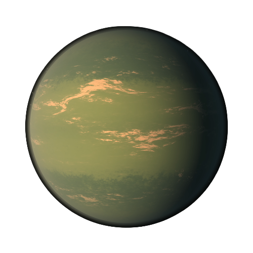
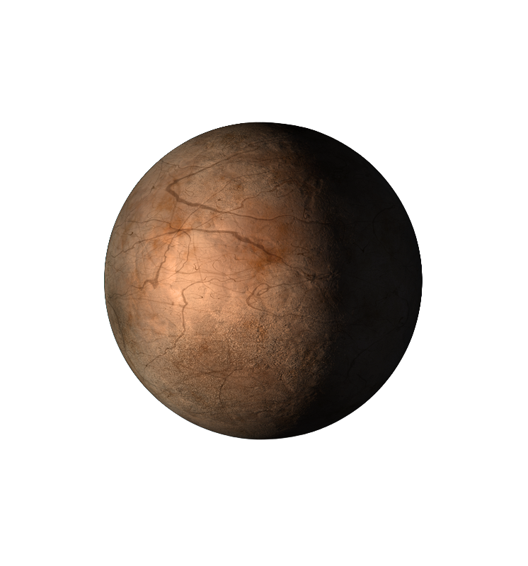

7 Mundos
Além do Sol
O sistema TRAPPIST-1 abriga sete planetas rochosos orbitando uma estrela anã vermelha a 40 anos‑luz da Terra. Três deles estão na zona habitável — com temperaturas que podem sustentar água líquida e, talvez, vida.
Zona Habitável
do TRAPPIST-1
Planetas e, f e g estão na zona habitável — região onde a temperatura permite água líquida na superfície.
Terra vs TRAPPIST‑1
Selecione um planeta e compare seus parâmetros físicos com os da Terra lado a lado.


O Sistema
TRAPPIST‑1
Estrela e 7 exoplanetas com dados baseados em pesquisas publicadas pela NASA e no NASA Exoplanet Archive.

TRAPPIST-1 é uma anã vermelha ultra-fria a apenas 40.66 anos-luz da Terra. Sua baixa luminosidade — menos de 0,1% do brilho do Sol — permite que os 7 planetas orbitais fiquem muito próximos à estrela e ainda assim mantenham temperaturas potencialmente habitáveis. Sua vida útil estimada em trilhões de anos a torna um dos ambientes mais duradouros para a evolução da vida.

O planeta mais próximo da estrela. Extremamente quente, provavelmente sem atmosfera densa e considerado inabitável.

Similar à Vênus em tamanho e aparência. Estudos do James Webb (2023) indicam que provavelmente não possui atmosfera espessa, sendo quente demais para a vida tal como conhecemos.

O de menor raio do sistema (0.770 R⊕). Está na borda interna da zona habitável com temperatura amena, mas sua baixa massa pode dificultar a retenção de uma atmosfera densa a longo prazo.
O exoplaneta mais promissor do sistema — e um dos melhores candidatos à habitabilidade já descobertos. Tamanho, massa e temperatura similares à Terra, na zona habitável central.

Na zona habitável com massa quase idêntica à Terra. A temperatura baixa sugere superfície parcialmente gelada, mas com efeito estufa adequado poderia ter água líquida em regiões temperadas.

O maior planeta do sistema, na borda externa da zona habitável. Sua maior massa pode reter uma atmosfera mais robusta, compensando parcialmente a menor irradiação recebida da estrela.

O planeta mais distante e frio do sistema. Provavelmente congelado, similar a um mundo de gelo. Sem fontes de calor internas ou atmosfera significativa, é considerado inabitável.
Curiosidades do
Sistema TRAPPIST‑1
Fatos surpreendentes sobre um dos sistemas planetários mais estudados da astronomia moderna.
Um "ano" completo em TRAPPIST‑1b dura apenas 1,51 dias terrestres — menos tempo que um fim de semana.
Os 7 planetas do TRAPPIST‑1 cabem todos dentro da órbita de Mercúrio — o sistema inteiro é menor que nossa vizinhança solar imediata.
Em qualquer um dos planetas de TRAPPIST‑1, os mundos vizinhos seriam visíveis a olho nu, aparecendo no céu com tamanhos semelhantes ou até maiores que a nossa Lua.
Todos os 7 planetas estão em ressonância orbital — suas órbitas completam razões matemáticas exatas como um relógio cósmico.
TRAPPIST‑1e recebe 66% da energia solar que a Terra recebe, mas sua temperatura média ainda pode sustentar água líquida com atmosfera adequada.
A estrela pode brilhar por mais de 10 trilhões de anos — 700 vezes a idade atual do universo, dando tempo suficiente para a evolução da vida.
O catálogo científico do OrbitCore democratiza o acesso a dados complexos da NASA, transformando-os em experiências educacionais acessíveis. Ao usar as mesmas equações dos astrônomos profissionais e dados reais do TRAPPIST-1, contribuímos para uma ciência mais inclusiva e conectada com o ODS 9 da ONU.